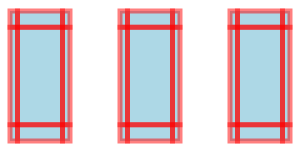
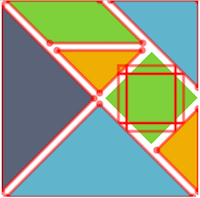
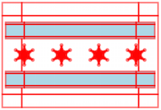
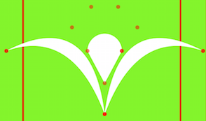
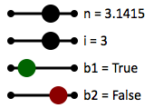
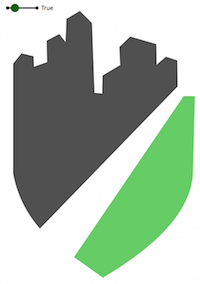
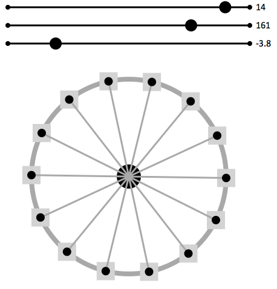
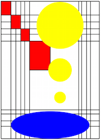
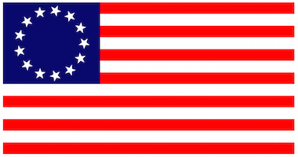

Sketch-n-Sketch [Blog]
Initial Case Studies
July 17, 2015
Our long-term goal is to tightly
integrate programmatic and direction manipulation in two primary
ways. First, to have users write a little program that generates
an SVG canvas, allow them to directly manipulate the output, and then
automatically infer changes to the program that matches the new output.
Second, to allow users to design content as usual in direct manipulation
interfaces, and then infer programs that capture the high-level intent
of the design.
The first workflow is what we call live mode, where Sketch-N-Sketch infers program updates in real-time along with the user's changes, without asking the user for any help. We call the second workflow ad hoc mode, where we attempt to infer more complicated program updates and will rely on the user to help identify the desired program. Smoothly integrating both of these modes will allow programmers and designers to get the best of both worlds.
In our initial milestone (v0.0), we have focused primarily
on designing algorithms and a basic user experience for live mode.
So for now, the user must start by writing a complete little program,
which then gets implicitly updated when the output canvas is
directly manipulated. In the coming months, we will be developing
more of the story for ad hoc mode.
Even with just live mode, however, we have used Sketch-N-Sketch to
effectively program and manipulate several designs that would be difficult
using existing direct manipulation tools, such as Illustrator and PowerPoint.
The rest of this article will describe several case studies to
back up this claim. You may want to
open Sketch-N-Sketch in a new tab
and try out the examples along with the discussion.
If you find yourself in a bind (syntactically), the little
Syntax Guide and standard Prelude may help.
Note: Much of the discussion below draws from this report.
Example: Evenly-Spaced Boxes
The nBoxes program is our "hello world" example for
prodirect manipulation. The number of boxes and their location, width,
and height are simple parameters to change in the program.
In addition, the location, width, and height
can easily be changed in the direct manipulation editor.
When manipulated in live mode, all of the boxes are updated
together in real-time.
(def nBoxes
(let [x0 y0 w h sep n] [40 28 60 130 110 3]
(let boxi (\i
(let xi (+ x0 (mult i sep))
(rect 'lightblue' xi y0 w h)))
(map boxi (list0N (- n 1))))))
; this is the "main" expression
(svg nBoxes)
The screenshot on the right shows the zones (interior, edges, corners, etc.) displayed to the user. When multiple program updates may be assigned to a user action, Sketch-N-Sketch uses heuristics to break the ambiguity without asking the programmer. Try dragging the interior zone of each box to see what parts of the program are affected.
Notice that, by default, Sketch-N-Sketch may change any of the numeric constants in the program in order to match the updates to the canvas. The programmer can freeze a constant, however, by annotating it with an exclamation point.
Try freezing the initial x0 and y0 positions
in the program (i.e. 40! and 28!) and see what happens. Then
try freezing the separation parameter instead.
Example: Elm Logo
The Elm logo is a tangram consisting of seven polygons.
We implemented this logo by massaging the definition from the SVG format
to the representation in little.
This process will be automatic once we add support for importing
SVG images directly.

There are two noteworthy aspects of this example in Sketch-N-Sketch.
The first is that our definition uses the 'viewBox'
attribute to define a local coordinate system for shapes within
the canvas. Because of the thin wrapper around SVG, the result in
Sketch-N-Sketch is that the output canvas is scaled to fit the size of the
canvas, no matter how large or small the application window it is.
As a result, even though our current implementation does not provide a way
to pan within or scale a canvas, one can use 'viewBox' in order
to render the output in "full screen" mode.
The second interesting aspect is the square, which is rotated using
the SVG matrix command within the transform attribute.
Again, even though we currently provide no special support for these
features, the zone we display for the square (though not rotated to
match) can still be used to directly manipulate it.
Example: Sketch-N-Sketch Logo
The high-level relationships between the shapes in the
Elm logo are not captured by the definition in SVG format,
nor in its direct translation to little.
As a result, directly manipulating any one of the pieces does not
affect the others, therefore breaking the intended abstraction
of the logo.

Our logo for Sketch-N-Sketch, which pays homage to the Elm logo,
uses the abstraction facilities afforded by a programming language to
declare relationships between multiple shapes.
The definition is parameterized by a position (x0,y0) for the top-left
corner, a width w and height h, and a delta parameter that
determines the size of the gap between the three shapes:
(let [x0 y0 w h delta] [50 50 200 200 10] ...)The rest of the definition (not shown) computes the three polygons in terms of these parameters. It is, thus, simple to change any of these values and re-run the program to generate an updated logo.
Better yet is the ability to manipulate the parameters directly
through the canvas in live mode. For example, say that we want to stretch the
logo, that is, by changing the w and h parameters. If we
click and drag bottom-right corner zone of the
bottom triangle in live mode,
the height of the logo is adjusted but not the width;
instead, the x-position of the logo is.
This is because of the heuristics that are used to automatically
break ambiguities.
We can proceed in a couple of ways. One option is to edit the code
to freeze the x0, y0, and delta values,
thereby directing Sketch-N-Sketch towards assigning the desired program
updates for this corner zone. With this change, directly
manipulating this corner point allows us to stretch the
logo in either direction.
Another option is to create a dummy,
transparent rectangle in the background with dimensions
w and h to surround the logo.
The bottom-right corner zone of this box will, predictably,
be assigned to manipulate the w and h parameters, thus,
providing direct manipulation control over the desired attributes of
the logo. This second option, creating an explicit "group box,"
is a design pattern that is often useful for mixing programmatic
and direct manipulation (i.e. prodirect manipulation) in the
current version of Sketch-N-Sketch. In future work, it may be useful to
provide some built-in support for grouping shapes.
Example: Chicago Flag
It is useful to define abstractions on top of the primitive
SVG shapes. We define a nStar function (and include it
in Prelude) that creates an n-sided star
centered at (cx,cy) and rotated rot radians
in the clockwise direction, where the distance from the center to the outer
points is len1 and the distance to the inner points is len2.
(def nStar
(\(fill stroke w n len1 len2 rot cx cy) ...))
We use nStar to implement the City of Chicago flag, which contains
four evenly-spaced six-sided stars. By directly manipulating the point
zones of a star in live mode, we can control the outer and
inner distances of all four stars. Modifying length parameters this way
can be surprising. For example, using negative lengths leads to
interesting patterns, even though one might not think to try them when
programming without immediate visual feedback.
Like with the Sketch-N-Sketch logo, we define a transparent group box (visible when displaying zones, as in the screenshot) to give direct manipulation control over the width and height of the flag. Unlike that example, however, there is no way to produce the same exact result by manipulating only one of the polygons. If the user changes, say, the bottom stripe by moving the mouse cursor a given distance, the overall dimensions of the flag will change, but not by the amount the cursor has moved. As a result, the relationship between stretching one of the stripes and the overall flag is not a smooth, intuitive one. Using a group box, however, provides the simple and expected behavior.
Example: Chicago Botanic Garden Logo

The symmetric design of the Chicago Botanic Graden logo
uses curves, defined with Bezier path commands.
By programming in little, we can define the coordinates
and control points such that they are reflected across
a vertical axis running down the middle of the logo.
Then, in live mode, direct manipulation of any position or control point
(the "floating" point zones in the screenshot)
in either half is immediately reflected in the other half.
Custom UI Widgets
The approach in Sketch-N-Sketch provides
control over many parameters in a program
by directly manipulating zones in the visual editor.
Some parameters — such as the number of boxes in nBoxes,
or boolean values, which are not paired with traces —
are hard to directly manipulate, however.
In such cases, the only option we have seen so far is to edit the program.

We observe that we can implement "helper" shapes whose properties affect
other parameters of interest.
For example, the slider function (discussed below)
defines visual slider abstractions that are used by the program below
(depicted in the screenshot to the right).
There are four sliders,
one for a floating-point number n,
one for an integer i, and
two for booleans b1 and b2
(we refer to boolean sliders as "buttons").
(let [n s1] (numSlider ... 0! 5! 'n = ' 3.1415)
(let [i s2] (intSlider ... 0! 5! 'i = ' 3.1415)
(let [b1 s3] (button ... 'b1 = ' 0.25)
(let [b2 s4] (button ... 'b2 = ' 0.75) ...))))Directly manipulating the sliders indirectly
manipulates four constants, the unfrozen constant on each line
(and, hence, the values bound to n, i, b1, and b2).
Both numSlider and intSlider are defined in terms
of the slider helper function:
; slider : Bool -> Int -> Int -> Int -> Num -> Num -> Str -> Num -> [Num (List Svg)]
(def slider
(\(roundInt x0 x1 y minVal maxVal caption srcVal)
(let targetVal
(let preVal (clamp minVal maxVal srcVal)
(if roundInt (round preVal) preVal))
(let shapes
(let ball
(let [xDiff valDiff] [(- x1 x0) (- maxVal minVal)]
(let xBall (+ x0 (* xDiff (/ (- targetVal minVal) valDiff)))
(let rBall (if (= targetVal srcVal) 10! 0!)
(circle 'black' xBall y rBall))))
[ (line 'black' 3! x0 y x1 y)
(text (+ x1 10) (+ y 5) (+ caption (toString targetVal)))
(circle 'black' x0 y 4!) (circle 'black' x1 y 4!) ball ])
[targetVal shapes]))))
(def [numSlider intSlider] [(slider false) (slider true)])The former returns srcVal clamped to the range
[minVal, maxVal], if necessary;
the latter, furthermore, rounds srcVal to the nearest integer.
We refer to the number supplied as the srcVal parameter to
be the "source" number used to derive the "target"
value, which is the first element of the pair returned by slider.
The second element of the pair is the list of shapes
that comprise the visuals of the slider. The idea is to place a "ball"
on the line between (x0,y) and (x1,y) at a distance
proportional to (srcVal - minVal) / (maxVal - minVal).
The visual editor does nothing to prevent the user from dragging
the ball beyond the endpoints of the line.
So, the approach we choose is to hide the ball
(i.e. by setting its radius rBall to 0) when it is out of
range.
We employ the same approach to implement button for directly
manipulating booleans (defined in Prelude).
In particular, a button is tied to a
source value between 0.0 and 1.0, where
values less than (resp. greater than) 0.5
represent true (resp. false).
The last two sliders in the screenshot are buttons that control
the boolean variables b1 and b2.
Helper shapes in little like sliders and buttons, which we
refer to as custom user interface widgets, are similar to the
notions of instruments and surrogate objects in HCI research,
both of which aim to provide GUI-based control over properties that are
not traditionally easy to directly manipulate.
What is interesting about our development is that the Sketch-N-Sketch
editor does not provide any special support for indirect manipulation
via user interface widgets; instead, they are derivable using the
basic prodirect manipulation approach we have described.
Example: Active Trans Logo

The logo of the Active Transportation Alliance contains two
paths, each of which has a single curved edge and some number of straight edges.
In our current implementation, Sketch-N-Sketch does not provide a GUI-based way
to create shapes or add extra points to existing shapes. Therefore,
these two paths must be generated using little code, at least initially.
Nevertheless, we found that we can quickly and easily begin implementing
this logo as follows. First, we implement a makePath function
that stitches together a path based on a list of points and a single
Bezier control point. Next, we define two intially-empty lists,
grayPts and greenPts, that will store the points of each
path. Then, we use makePath to construct two paths out of these lists.
(let makePath (\(color pts [xCtrl yCtrl]) ...)
(let [grayPts greenPts] [ [] [] ]
(let [p1 p2] [(makePath ...) (makePath ...)]
...)))Now the task is to define the list of points for each path.
We would like to do this visually by directly manipulating points
into the desired positions, but we need some points to begin with.
As is, grayPts and greenPts are empty, so there are
no shapes to render.
One option is to use a text editor to populate the list with dummy
points, but this could be tedious for a large number of points,
especially because they should be reasonably spaced out so that
they can be manipulated in the visual editor. Instead, we wrote
a little function to generate such a list of points and
evaluated it using the Elm REPL (read-eval-print loop). We
then copied this list into our program, rendered it, and proceeded
to directly manipulate the points. Our helper function essentially
created a "ball of clay" that we massaged into the desired shapes.
In future work, the visual editor might provide support for generating
complex shapes using templates such as this one.
Once we settled on the desired shapes of our paths, we returned to the program to introduce structure that relates the topmost points of the top shape (corresponding to the city skyline). As a result, dragging any one of these points up or down in live mode affects all of the others. So, if the skyline grows taller (which has been known to happen in Chicago), we can easily adapt the logo to match.
Lastly, we include a button in our development and use it to toggle between a "positive" version, where the shapes are colored and the background is white, and a "negative" version, where the shapes are white and the background is colored. These two versions of the logo are easy to develop in tandem using Sketch-N-Sketch.
Example: Ferris Wheel
For the final case study we will discuss, we designed a ferris wheel that consists of some number of equal-length spokes emanating from a central hub, each of which has a passenger car at its end. Furthermore, we wanted the ability to rotate the wheel while keeping the passenger cars vertical, in order to accurately portray the physical characteristics of a ferris wheel in motion. It is hard to imagine how one could develop these relationships in a modular way using tools like Illustrator or PowerPoint.

In Sketch-N-Sketch, we combine programmatic, direct manipulation, and indirect manipulation (via user-defined sliders) to develop our design in a way that is highly-reusable and easy to edit. First, we write a function
(def ferrisWheel
(\(numSpokes spokeLen rotAngle sizeCar radiusCenter cx cy) ...))that, given several parameters, draws the desired circles, lines, and rectangles. The function is straightforward to write, making use of a Prelude function
(def nPointsOnCircle (\(n rot cx cy r) ...))that generates a list of n points evenly spaced around a circle
of r radius centered at (cx,cy).
A drawing that results from ferrisWheel is shown in the screenshot.
We can directly manipulate several parameters of the ferris wheel:
we can adjust the location (cx,cy) of the wheel by dragging
the interior zone of the central hub;
we can adjust radiusCenter to change the size of the central hub by
manipulating its edge zone; and
we can adjust the width sizeCar of all passenger cars by
manipulating any one of their edge zones.
While this workflow in Sketch-N-Sketch is already unique and quite useful,
it would be nice to also have a way to adjust numSpokes
and rotAngle in the visual editor. However, no zones are connected
to these parameters.
Therefore, we add sliders to expose control over numSpokes,
rotAngle, and spokeLen from the GUI editor.
(let [num s1] (intSlider ... 5)
(let [len s2] (intSlider ... 80)
(let [rot s3] (numSlider ... 0)
(let wheel (ferrisWheel num len rot ...)
(let sliders
(let show true
(if show (concat [s1 s2 s3]) []))
(svg (append sliders wheel)))))))The resulting canvas is shown above.
With this setup, we can easily tweak any of the parameters
to ferrisWheel in live mode without having to modify the
program. If we wanted to change something about the ferris wheel
abstraction, of course, we could easily switch to programmatic
manipulation as needed.
To wrap up, we note how easy it is to export our ferris wheel
design once we have finished modifying it.
We can set the show parameter to false in order to hide
the sliders from the output. From there, we use the export
facility in Sketch-N-Sketch to generate the raw SVG for our design, which
we can copy and paste into other SVG editors or HTML documents.
More Examples
 
Our Git repo contains several more examples to play with.
Note that performance does start to lag a bit as the number of shapes grows larger. We have not yet played any optimization tricks, but we will in the future.